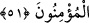

dünya hayatında azabetmeyi ve kâfir olarak canlarının çıkmasını istiyor.
56. Sizden olduklarına Allah’a yemin ediyorlar. Oysa onlar sizden değildirler.
Fakat onlar korkak bir topluluktur.
57. Eğer sığınacak bir yer yahut mağaralar ya da sokulacak bir delik bulsalardı,
hemen oraya doğru koşarlardı.
Ey Muhammed! Bedir savaşında olduğu gibi bazı savaşlarda “sana bir iyilik” yani
zafer ve ganîmet “ulaşsa”, bu iyilik “onları üzer” sana olan aşırı hased ve
düşmanlıkları sebebiyle bu iyilik, münâfıklara keder ve üzüntü verir. “ve eğer”
Uhud’da olduğu gibi bazı savaşlarda “sana” yaralanma ve şiddet gibi “bir kötülük
ulaşsa” müminlerden ayrı kalmalarına ve savaşa katılmamalarına “sevinerek biz
önceden” yani musibet başımıza gelmeden önce “tedbir almışız” ihtiyatlı davranmışız,
ileri görüşlülük etmişiz ve bu savaşa gitmemişiz “derler ve” savaş için oluşturulan
toplantı
ve
müzakere
meclisinden,
ailelerinin
yanına
sevinçli
sevinçli
“döner(gider)ler.”
Âyetin bu şekilde tefsîri “sana” hitabıyla müminlerin kastedilmesi durumundadır.
Nitekim sonraki âyette “bize” (mütekellim maal-ğayr) zamirinin kullanılması, bunu
göstermektedir. Yoksa “Peygamber (a.s.) savaşlarından birisinde hezimete uğramıştır.”
diyen kimseden tevbe etmesi istenir. Tevbe ederse ne âlâ, aksi takdirde öldürülür.
Çünkü bu bir nakîsadır, eksikliktir. Nakîsa ise özellikle Peygamber Efendimiz hakkında
câiz olmaz. Çünkü o vazifesinde daima basiret sahibi, mâsûmiyetinde şüphe
bulunmayan bir peygamberdir. Kadı Abdullah b. Murâbıt’tan naklen Hediyyetü’l-
mehdiyyîn adlı eserde böyle geçmektedir.
51. De ki: “Allah bizim için ne yazmış ise ancak o bize ulaşır, bizim mevlâmız
O’dur. Müminler sâdece Allah’a tevekkül etsinler.”
Sevinçlerini bina ettikleri itikadın bâtıl ve boş olduğunu beyan etmek üzere onlara
“de ki: Allah bizim için” Levh-i mahfuz’da hayır ve şer, zorluk ve genişlik olarak “ne
yazmış ise ancak o bize ulaşır,” onun dışındaki bir şey asla ulaşmaz. Yazılan bu şey de
sizin muvafakat ya da muhâlefet etmenizle değişmez. Kulların işleri ancak (Allah
tarafından) muhkem ve sağlam olarak yapılmış bir tedbir üzere cereyan eder. “Bizim
mevlâmız” yardımcımız ve işlerimizi yürüten “O’dur. Müminler sâdece Allah’a
tevekkül etsinler.”
Âyetin “Müminler yalnızca Allah’a tevekkül etsinler” kısmı, “de ki” emriyle